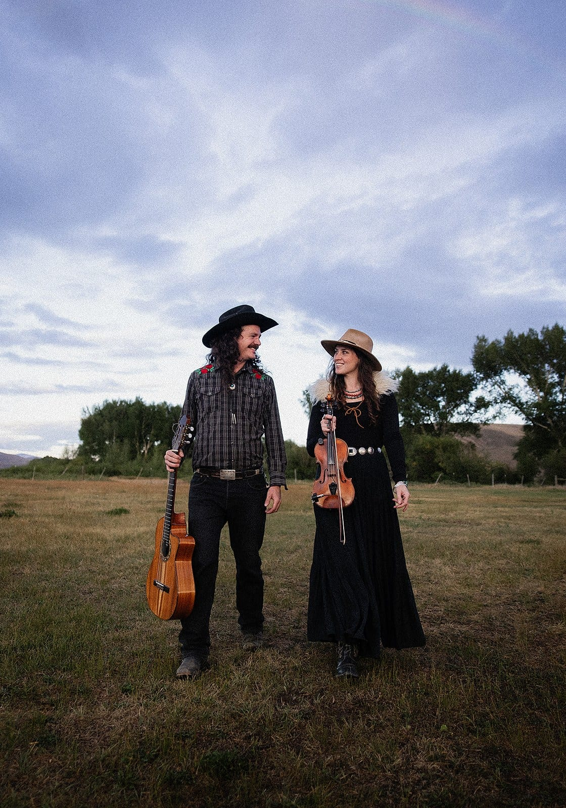
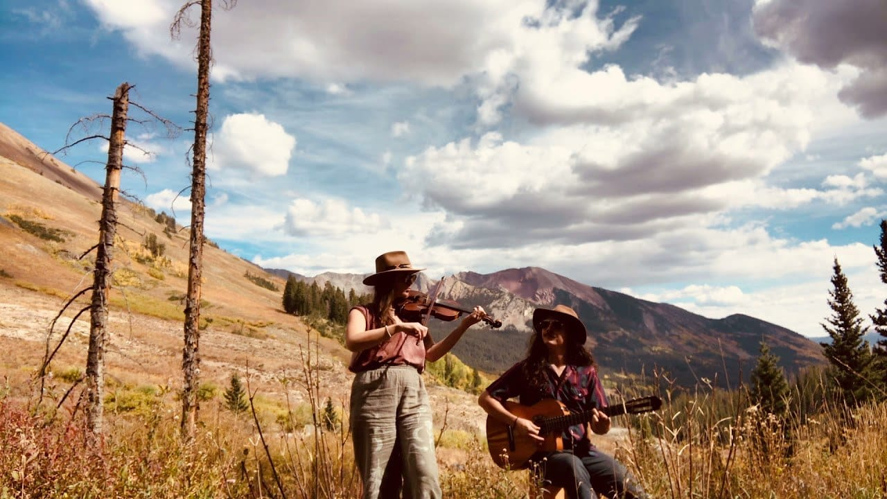
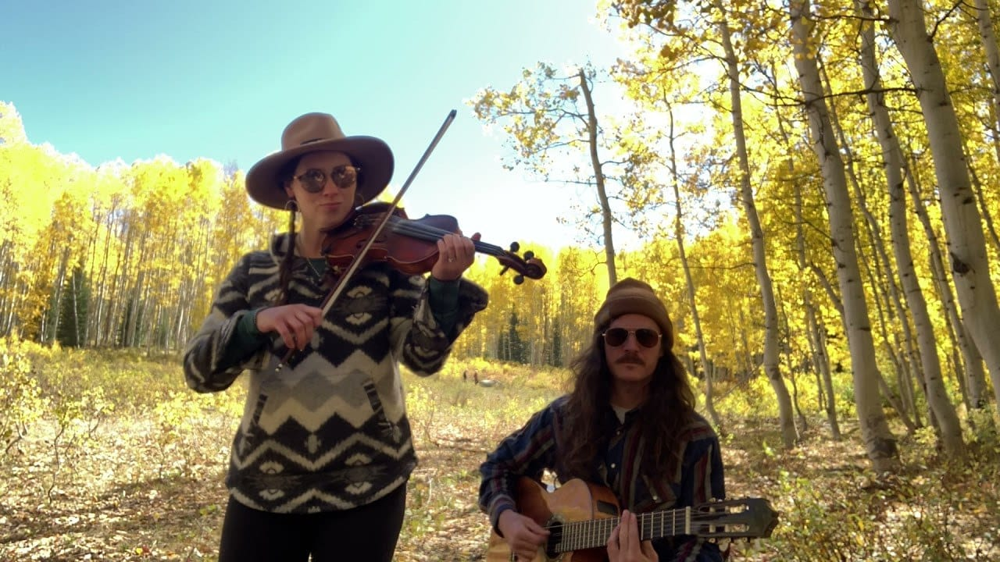

Violin and guitar duo
Roma Ransom
Folk tunes, covers and originals, as a duo.
There’s something about a violin and a guitar together that makes an event feel a little more special. Roma Ransom is Grace Easley on violin and vocals and Gordon Lewis on guitar, a married duo from Colorado Springs who play Romanian and Eastern European folk tunes, old-time ballads and a little swing. They’re a lovely choice for a wedding or a dinner party.
Press and stages
In the press and on air
- Colorado Public Radio
Press · The Gazette, Colorado Springs · 2020
What’s the secret to sharing love and the stage? A Colorado Springs duo dishes
- Colorado Springs Lifestyle
Press
“Grace and Gordon are truly exceptional.”
Roma Ransom are all the rage on the Front Range (Ryan Flores, a Colorado Springs musician)
Stages and credits
- Played Dazzle, Denver’s jazz club (2024)
- A VIP event at the Pikes Peak Center for an Itzhak Perlman performance
- Festival bills with Leftover Salmon and Larry and His Flask
- The Lon Chaney Theater’s Finale Series in Colorado Springs (2023)
- The Parker Days Festival (2024)
- The MeadowGrass Music Festival, the Colorado Wine Festival and The Black Rose Acoustic Society
- Music in films and ads for Patagonia, Yeti, Huckberry, Bud Light, Vice and Xtratuf
- Three EPs: Roma Ransom, Hiraeth and Isolation
Trusted and booked by
Grace and Gordon met busking on a street in Springfield, Missouri, and they’ve played together ever since. They named the duo for the music of Romania, and their song list runs from swing tunes like Caravan to Romanian and Eastern European folk, old-time ballads and their own songs. Both trained classically from an early age, Grace on violin and viola and Gordon on guitar, and Grace sings, too.
For about a decade they’ve played more than 200 shows a year, touring all over North America, and they’ve shared festival bills with Leftover Salmon and Larry and His Flask. Closer to home, they’ve played Dazzle in Denver and the Lon Chaney Theater in Colorado Springs, and they played a VIP event at the Pikes Peak Center for an Itzhak Perlman performance.
Their music has been in films and ads for Patagonia, Yeti, Huckberry and Bud Light, and Colorado Public Radio has featured them on Air Check. They bring their own sound system, so they can play outdoors or in just about anywhere you’d like them.
Configuration
| Size | What it suits |
|---|---|
| DuoGrace Easley on vocals, violin and viola, and Gordon Lewis on guitar and percussion | Violin and guitar make a beautiful pair for a ceremony or a cocktail hour. They can play a whole set of instrumental tunes, or bring in Grace’s voice for the songs. |
Send us your date and we’ll help you plan the music around your event. They can play instrumental tunes or songs with vocals, or a mix of both.
Occasions
Perfect booking for
- Mountain and garden weddings
- Book them for your ceremony, and a few swing and folk tunes give your cocktail hour a romantic, old-world feel.
- Dinner parties and celebrations
- They’re a great fit for a birthday, an anniversary or a dinner at home, when you’d like music with some character that still lets everyone talk.
- Banquets and client dinners
- Two classically trained players with a song list from Romania to Appalachia make a memorable dinner for clients or a team, at a volume where nobody has to raise their voice.
- Daytime and outdoor events
- They bring their own sound system and play outdoors all the time, so a patio or a garden party is an easy fit.
Planning toasts or a program? We can work the music around them with your run of show. You can also get a general idea of what live music costs in Colorado from our cost guide.
Video Clips
Watch Roma Ransom play





What clients say
“Roma Ransom was perfect for dinner service in our restaurant Sacred Grounds Cafe and Wine bar... We would recommend them to everybody and we booked them as many nights as they want.”
Roma Ransom questions
Still have a question? Our full question list may have the answer.
Do they play instrumental music or songs?
Can they play our ceremony?
Do they bring their own sound?
Do they play outside Colorado Springs?
Looking for a violin and guitar duo for your event?
Send us your date and we’ll let you know if Roma Ransom is available and what it would cost.
Want photos or video of your event? Add them to your booking.